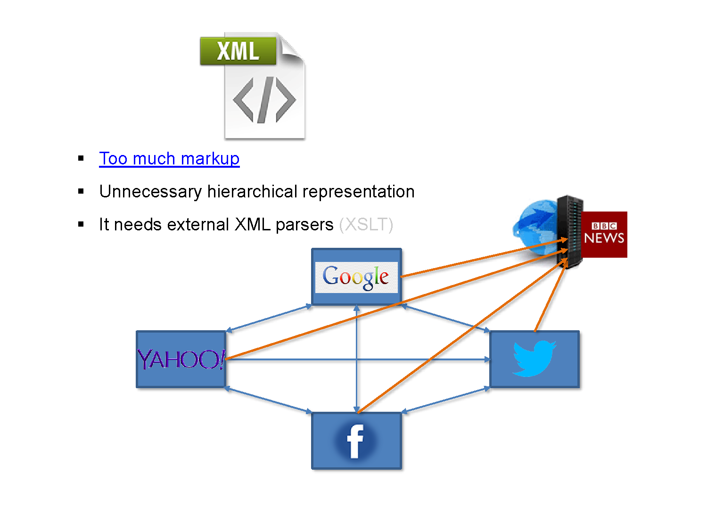
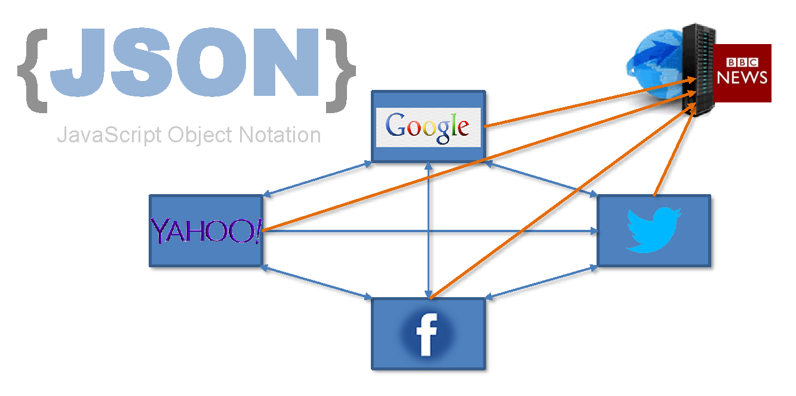

XML and RSS
F28WP Web Programming
2019-2020
## Overview * What do we mean by **XML** and **RSS**? * What is RSS used for? * XML vs JSON * **Examples** * Questions and Discussion
## Revision Question What does JSON stand for? * a) Javascript Syntax Orientated Notation * b) Just in Time Syntax Object Notion * c) Java Orientated Notation * d) JavaScript Object Notation
## Answer Answer: **d)** JavaScript Object Notation JSON stands for JavaScript Object Notation
## Revision Question Is the following valid JSON syntax? ``` { "book": [ { "id":"01", "language": "Java", "edition": "third", "author": "Herbert Schildt" }, { "id":"07", "language": "C++", "edition": "second" "author": "E.Balagurusamy" } ] } ```
## Answer Answer: **No** Missing a comma after: "edition": "second" Test in https://jsonformatter.org/
## RSS - Really Simple Syndication * An RSS file is a small text file that provides a concise summary of the content of a web page * The RSS file is revised every time the web page is updated * RSS is used for information dissemination - requires very little bandwidth * **RSS written in XML** (eXtensible Markup Language)
## Family * RSS is a family of XML * Typically used for news websites and weblogs * Abbreviation is used to refer to the following - Rich Site Summary (RSS 0.91) - Really Simple Syndication (RSS 2.0)
## Subscription * RSS allows internet uses to subscribe to RSS feeds ([details])(https://en.wikipedia.org/wiki/RSS)
## RSS Essentials * Essential elements of an RSS file are: - Title - Link (hyperlink) - Description * RSS enables use to create information sources * Users **subscribe** to an RSS **feed**
Example RSS Feed
Click on RSS Feed to see the XML
Foratting when viewed in browser - why?
## RSS Contents (XML) ``` <rss version="2.0"> <title> NYT > Home Page </title> <link> http://www.nytimes.com/index.html </link> <description> New York Times > Breaking News, World News & Multimedia </description> <lastBuildDate> Mon, 12 Dec 2005 05:05:00 EST </lastBuildDate> <copyright> Copyright 2005 The New York Times Company </copyright> <language> en-us </language> … ``` * Examine an RSS feed and identify XML tags
## Distribution via RSS Information distributed by RSS, include: * Web logs (blogs) * Digital photo collections, such as Flickr * Audio blogs (podcasts) * Social bookmarking sites, such as Del.icio.us
## Things you can do with RSS * News syndication * Search for information via RSS * Aggregate your feeds * Display news on your website * Display news on your mobile device * Collect all your email in RSS * Get RSS content through your email * Track Fedex packages * discount air fares * Bargains at Ebay * Get stock updates ...
## Things you can do with RSS (more) * Get the weather reports * What people are saying about you, your company, your products * Music, radio shows, TV clips * Stay updated on someone's schedule * Get cinema schedule updates * Read your favourite comics * What other people are surfing * Automatically backup your weblog posts * Get software updates * Get the latest bittorrent files * Shopping deals at Amazon.com and others * ...
## XML vs JSON XML ``` <employee> <firstName>Bob</firstName> <emNo>123</emNo> </employee> ``` JSON ``` var employee = { "firstName": Bob "emNo": 123 } ```
XML or JSON?
## XML over JSON 
## **XML over JSON** * Easy to take XML and apply XSLT to make XHTML. * XML is **supported** by many more desktop applications than JSON * JSON can be put in the XML on the way back to the client – the benefit of both! It’s called XJAX (stands for X-domain JavaScript And XML). * Simply, AJAX includes XML in it and not JSON.
## JSON over XML 
## JSON over XML * JSON requires less tags than XML * JSON is transportation-independent, you can just bypass the XMLHttpRequest object for getting your data * **JavaScript** is not just data – put **methods** and all sorts of goodies in JSON format * You can get JSON data from anywhere, not just your own domain (standard) * JSON is easier to read than XML
## Parsing RSS Feeds * With **jQuery's** jFeed * **XML** Compliant
## With jQuery's **Built-in** XML Support ``` $.get(FEED_URL, function (data) { $(data).find("entry").each(function () { // or "item" or what suits your feed var el = $(this); console.log("------------------------"); console.log("title : " + el.find("title").text()); console.log("author : " + el.find("author").text()); console.log("description: " + el.find("description").text()); }); }); ``` * 'FEED_URL' RSS Source
## With jQuery and the Google **AJAX** Feed API ``` $.ajax({ url : document.location.protocol + '//ajax.googleapis.com/ajax/services/feed/load?v=1.0&num=10&callback=?&q=' + encodeURIComponent(FEED_URL), dataType : 'json', success : function (data) { if (data.responseData.feed && data.responseData.feed.entries) { $.each(data.responseData.feed.entries, function (i, e) { console.log("------------------------"); console.log("title : " + e.title); console.log("author : " + e.author); console.log("description: " + e.description); }); } } }); ```
## Summary * Understand **XML** and **RSS** * Whats, Whys and Hows of RSS * Basic syntax and structure * JSON vs XML
## To do this week ... * **Read** over the lectures * Review the revision questions * Work through tutorial practicals * **Experiment** (get into good habits) * Read RSS [link](https://www.w3schools.com/xml/xml_rss.asp)